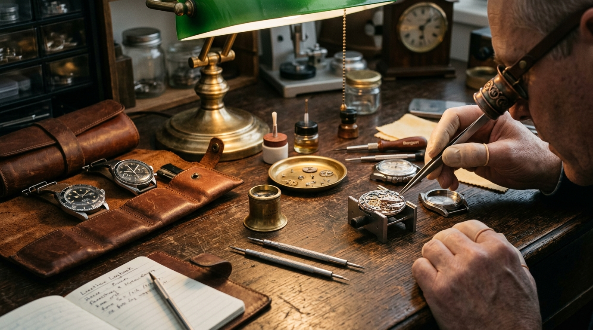

Optical Diagnostic
10x Achromatic Triplet Loupe
The universal standard for inspecting diamond cut symmetry, culets, GIA girdle laser inscriptions, and gemstone clarity inclusions.
Why It Matters: Magnifies without optical color distortion or edge blurring.
Who Needs It: Serious buyers, gemstone appraisers, vintage jewelry collectors.
How To Use: Anchor against orbital eye bone; bring jewel to ~1 inch distance.